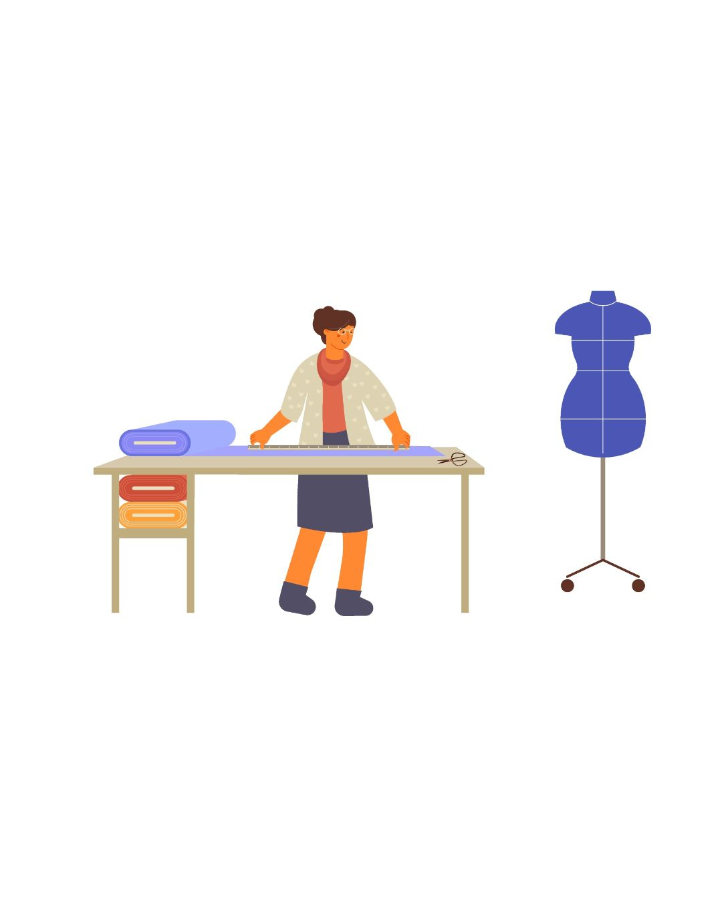

Servicios en San Antonio

Ajustes
Pantalones, vestidos, chaquetas, camisas — hechos a la medida. Desde $20

Ropa Personalizada
Conjuntos, vestidos, trajes y más hechos a medida. Desde $100

Reparaciones y Ajustes
Remiendos, reemplazo de cremalleras, dobladillos y restauraciones. Desde $15
Trabajo Especializado
Vestidos de boda, ropa formal y prendas únicas. Los precios varían.

Artículos a la Venta
Ropa, calzado e incluso tamales para la venta.